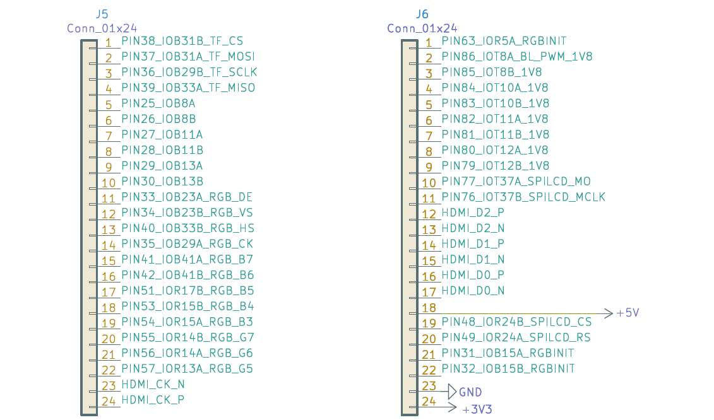

บอร์ด Sipeed Tang FPGA#
Keywords: Gowin FPGA, Sipeed Tang Nano FPGA Boards
▷ บอร์ด FPGA - Sipeed Tang Nano#
บอร์ด Sipeed Tang เป็นบอร์ดที่มีชิป FPGA ของบริษัท Gowin Semiconductor และมีบอร์ดให้เลือกใช้หลายรุ่น เช่น Sipeed Tang Nano 1K / 4K / 9K / 20K และ Tang Primer 20K (เรียงตามความจุเชิงลอจิกจากน้อยไปมาก)
บทความนี้ได้สรุปข้อมูลเชิงเทคนิคของบอร์ด Sipeed Tang FPGA มาเป็นตัวอย่าง

รูป: ตัวอย่างบอร์ด Sipeed Tang Nano (Source: Sipeed)
บอร์ด Sipeed Tang Nano สามารถเสียบขา Pin Headers ลงเบรดบอร์ดได้ สำหรับการต่อวงจรอิเล็กทรอนิกส์ประเภทต่าง ๆ
HackerBox FPGA Lab Kit เป็นตัวอย่างของบอร์ดอิเล็กทรอนิกส์สำหรับฝึกปฏิบัติและใช้ร่วมกับบอร์ด Sipeed Tang Nano 9K และโมดูลอิเล็กทรอนิกส์ เช่น
- 128x64 0.96" SSD1306 OLED Display Module(3.3v)
- 8x8 LED Matrix 1088AS (8 rows and 8 columns)
- ADS1115 I2C 16-bit ADC Module (3.3V) + 100K Potentiometer
- 8x DIP Switches
- 4x Tactile Momentary Buttons
รูป: ชุดทดลองอิเล็กทรอนิกส์ HackerBox FPGA Lab Kit
▷ Sipeed Tang Nano 1K#
บอร์ดรุ่นนี้ใช้ชิป GW1NZ-LV1 (อยู่ในตระกูล Gowin LittleBee FPGA Family) ที่มีความจุเชิงลอจิกน้อยที่สุดในกลุ่ม Tang Nano Board Series โดยพิจารณาจากจำนวน LUT4 (4-input Look-Up Tables) ซึ่งมีเท่ากับ 1,152 หรือ ประมาณ 1K ความจุของหน่วยความจำในชิป และจำนวนขา I/O เป็นต้น แต่ก็มีราคาต่ำกว่าบอร์ดรุ่นอื่น ดังนั้นจึงเหมาะสำหรับผู้ที่เริ่มต้นและอยากลองใช้บอร์ด FPGA
- Release Date: October 2021
- FPGA Device: GW1NZ-LV1
(Datasheet)
- Core Voltage: 1.2V
- Chip Package: QN48
- Speed Grade: C6/I5
- LUT4 (4-input Lookup Table): 1,152
- FF (Flip-Flop): 864
- S-SRAM (Shadow-SRAM): 4,068
- B-SRAM (Block-SRAM): 4 Blocks (max. 18,432 bits per block)
- Embedded NOR-Type UserFlash: 64KBits
- Embedded NOR-Type Configuration Flash: 64KBits
- 18x18 Embedded Multipliers: None
- PLL: 1
- I/O Banks: 2
- I/O BANK 0
- I/O BANK 1
- Onboard Clock Source (Crystal Osc.): 27MHz
- XTAL_IN: Pin 47 / IOT10A
- 2x User Buttons (3.3V, Active-low, 10k pullup): A and B
- KEY_A: Pin 13 / IOT12B
- KEY_B: Pin 44 / IOT13A
- 1x RGB LED (active-low):
- LED_R: Pin 09 / IOR2A
- LED_G: Pin 11 / IOR3A
- LED_B: Pin 10 / IOR3B
- USB-JTAG: Bouffalo Lab BL702 @32MHz
- JTAG_TCK: Pin 03 / IOT7B
- JTAG_TMS: Pin 04 / IOT7A
- JTAG_TDI: Pin 05 / IOT8A
- JTAG_TDO: Pin 07 / IOT8B
- 40-Pin 0.5mm-Pitch FPC Interface (for RGB565 LCD display)
- TYPE-C connector：
- Voltage Supply (VBUS): 5V ± 10% @0.5A
- PSRAM Socket (not soldered)
- LDO Voltage Regulator: SSP6206-12NR
- Vin: 5V
- Vout: 1.2V @300mA (Core Voltage)
- LDO Voltage Regulator: ME6211C33
- Vin: 5V
- Vout: 3.3V @500mA (for I/O Bank 0 and 1)
รูป: บอร์ด Tang Nano 1K มุมมองจากด้านบนและด้านล่างของบอร์ด (Source: Sipeed)
รูป: ตำแหน่งขาของบอร์ด Tang Nano 1K (PinOut)
รูป: ตำแหน่งขาของคอนเนกเตอร์ P1 & P2 (20-pin 2.54mm-pitch Single-Row Pin Headers) ของบอร์ด Tang Nano 1K และขาสำหรับ 4-pin JTAG Interface
แนะนำให้ผู้ใช้ศึกษารายละเอียดจากไฟล์ Schematic ของบอร์ด Tang Nano 1K
ข้อสังเกต:
- บอร์ด Tang Nano 1K (GW1NZ-LV1) มาแทนที่บอร์ด Tang Nano (GW1N-1-LV)
- ชิป Gowin FPGA รองรับการโปรแกรมทั้งแบบ On-chip SRAM (volatile) และ Flash (non-volatile) และในกรณีที่เป็นหน่วยความจำแฟลช ก็มีโหมดการโปรแกรมให้เลือกแบบ On-chip Flash และ Off-chip Flash
- ชิป GW1NZ-LV1 อยู่ในซีรีย์ GW1NZ ในตระกูล Gowin LittleBee มีหน่วยความจำแบบ Embedded Flash และสามารถใช้สำหรับเก็บข้อมูล "บิตสตรีม" ของชิป FPGA ดังนั้นเมื่อเปิดไฟเลี้ยงใช้งานให้กับบอร์ด ก็จะมีการดาวน์โหลดข้อมูล "บิตสตรีม" จากหน่วยความจำแฟลชมาใส่ลงในหน่วยความจำ Configuration SRAM ภายในชิป FPGA ได้โดยอัตโนมัติ แล้วจึงจะได้วงจรดิจิทัลที่ทำงานได้ตามที่ออกแบบไว้
- ชิป GW1NZ-LV1 มีหน่วยความจำ Embedded UserFlash (FLASH64KZ) ขนาด 64KBits อยู่ภายใน (เช่นเดียวกับชิปรุ่นอื่นในซีรีย์ Gowin LittleBee) สำหรับการเก็บบันทึกข้อมูลโดยผู้ใช้
- ชิป GW1NZ-LV1 ไม่มีวงจรตัวคูณขนาด 18x18 บิต ดังนั้นจึงเป็นข้อจำกัดอย่างหนึ่งสำหรับการใช้งานที่เกี่ยวข้องกับการคำนวณเชิงเลขหรือประมวลผลสัญญาณดิจิทัล
- บอร์ด Tang Nano 1K มีชิปไมโครคอนโทรลเลอร์ BL702 (32-bit RISC-V) @32MHz ที่มีเฟิร์มแวร์อยู่ภายในไว้ทำหน้าที่เป็นอุปกรณ์ USB-JTAG / USB-Serial ให้กับชิป FPGA
- บอร์ด Tang Nano 1K มีวงจรสร้างสัญญาณ Clock (27MHz) ให้กับชิป FPGA โดยต่อเข้าที่ขา Pin 47 / IOT10A / XTAL_IN
- บอร์ด Tang Nano 1K ไม่ได้มีการบัดกรีตัวไอซีหน่วยความจำ SPI PSRAM (3.3V) มาให้ แต่ก็ไม่จำเป็นต่อการทำงานของ FPGA บนบอร์ด
แผนผังต่อไปนี้แสดงให้เห็นการจัดแบ่งองค์ประกอบภายในชิป GW1NZ-1 FPGA ได้แก่
- CFU (Configurable Functional Unit)
- CLU (Configurable Logic Unit)
- CLS (Configurable Logic Section): LUT4 + FF
- CRU (Configurable Routing Unit)
- IOB (I/O Block)
- Block SRAM
- PLL (Phase Locked Loop)
- Embedded Flash (User Flash & Configuration Flash)
- I/O Banks (0 & 1)
- OSC (On-chip Oscillator) used for FPGA configuration in Master-SPI mode)
- SPMI (System Power Management Interface)
- I3C (Inter Integrated Circuit) Two-Wire Bus Controller
รูป: แผนผังองค์ประกอบภายในชิป GW1NZ-1 (Source: Gowin Semiconductor)
รูป: องค์ประกอบภายในของ CFU (Configurable Functional Unit)
รูป: ข้อมูลเกี่ยวกับการเลือกชิปในซีรีย์ GOWIN LittleBee GW1NZ (มีเพียง 2 รุ่นคือ GW1NZ-1 และ GW1NZ-2)
คำอธิบายเพิ่มเติมเกี่ยวกับวงจรภายใน Gowin LittleBee FPGA
องค์ประกอบพื้นฐานสำหรับการสร้างฟังก์ชันลอจิกภายในชิป Gowin LittleBee FPGA แบ่งเป็น 2 ชนิด ได้แก่
- Configurable Function Unit (CFU)
- Configurable Logic Unit (CLU)
ภายใน CFU / CLU แต่ละหน่วยประกอบด้วย CLS (Configurable Logic Section) มีจำนวน 4 หน่วย (CLS0..CLS3) แต่ละหน่วย มี LUT4 กับ REG (Flip-Flop) จำนวน 2 คู่ และมีส่วนที่เรียกว่า Configurable Routing Unit (CRU) เพื่อใช้สำหรับการเชื่อมต่อสัญญาณลอจิกภายใน CFU / CLU
CLU แตกต่างจาก CFU เนื่องจากไม่สามารถใช้งานเป็น SRAM ได้ เฉพาะใน CLS3 สามารถใช้งาน LUT4+SREG แต่ละคู่ ให้เป็นหน่วยความจำ ROM16x1 หรือ RAM16x1 (16 addresses, 1-bit data outout) ได้ หรือเรียกว่า Shadow-SRAM หรือ S-SRAM (ได้ทั้งแบบ Single-Port และ Semi Dual-port) นอกจากนั้นแล้วทั้ง LUT4+REG และ LUT4+SREG สามารถใช้งานเป็น Shift Register ได้
ถ้าต้องใช้เก็บข้อมูลใน SRAM ในหลักกิโลไบต์หรือมากกว่า แนะนำให้ใช้หน่วยความจำ BSRAM (Block SRAM) ซึ่งแต่ละหน่วยหรือบล็อกสามารถเก็บข้อมูลได้สูงสุด 18Kbits มีโหมดการทำงานให้เลือกใช้ได้ ดังนี้
- Single Port mode (SP): มีพอร์ตเขียนหรืออ่านเพียงหนึ่งพอร์ต
- Dual Port mode (DP): มีพอร์ตเขียนหรืออ่านได้พร้อมกัน 2 พอร์ต (พอร์ต A และ B) เขียนและอ่านพร้อมกันสองพอร์ตได้ แต่ต่างแอดเดรสกัน มีขนาดของแต่ละพอร์ตแตกต่างกันได้ และใช้สัญญาณ Clock ที่แตกต่างกันได้
- Semi-Dual Port mode (SDP): มีหนึ่งพอร์ตสำหรับเขียนข้อมูล (พอร์ต A) และอีกหนึ่งพอร์ตสำหรับอ่านข้อมูล (พอร์ต B) ขนาดของทั้งสองพอร์ตเท่ากัน ใช้สัญญาณ Clock ต่างความถี่กันได้
- Read-only-mode (ROM): มีพอร์ตที่อ่านข้อมูลเพียงอย่างเดียว
รูป: โหมดการใช้งานสำหรับ BSRAM และการกำหนดขนาดบิตข้อมูล-จำนวนบิตสำหรับแอดเดรส
▷ Sipeed Tang Nano 4K#
บอร์ดรุ่นนี้ใช้ชิป GW1NSR-LV4C ซึ่งอยู่ในตระกูล Gowin LittleBee FPGA Family แต่มีความจุเชิงลอจิกมากกว่าบอร์ด Tang Nano 1K เนื่องจากมีจำนวน LUT4 เท่ากับ 4,608 หรือ ประมาณ 4K
- Release Date: August 2021
- FPGA Device: GW1NSR-LV4C
- Core Voltage: 1.2V
- Chip Package: QN48P
- LUT4: 4,608
- FF (Flip-Flop): 3,456
- S-SRAM: Not supported
- B-SRAM: 10 Blocks (18KBits per Block)
- Embedded HyperRAM: 64MBits (8-bit data bus)
- Embedded PSRAM: 64MBits (8-bit data bus)
- Embedded UserFlash: -
- 18x18 Multipliers: 16
- Hard-IP Processor Core: 32-bit ARM Cortex M3 @80MHz
- PLLs: 2
- I/O Banks: 4
- Onboard Crystal Oscillator (3.3V): 27MHz
- SYS_CLK: Pin 45 / IOT13A
- Onboard NOR-Type SPI Flash: PUYA P25Q32 (3.3V, 32Mbits)
- Onboard USB-JTAG Debugger: Bouffalo Lab BL702 @32MHz
- 2x User Buttons (Active-Low, 1.8V)
- KEY_S1: Pin 14 / IOB4B
- KEY_S2: Pin 15 / IOB5A
- 1x HDMI Interface (for Video Output)
- 1x 24-pin 0.5mm-pitch DVP Interface (for Camera Input: OV2640)
- Switching-type Voltage Regulator: TMI7003C
- Vin: 5V
- Vout: 1.8V, 2.5V, 3.3V
- LDO Voltage Regulator: ME6211C12
- Vin: 2.5V
- Vout: 1.2V (Core Voltage)
- I/O Bank Voltages
- 3.3V: I/O Bank 0 and 1
- 2.5V: I/O Bank 2
- 1.8V: I/O Bank 3
- Verilog Examples
แนะนำให้ผู้ใช้ศึกษารายละเอียดจากไฟล์ Schematic ของบอร์ด Tang Nano 4K
รูป: ตำแหน่งขาของบอร์ด Tang Nano 4K (PinOut)
รูป: ตำแหน่งขาของคอนเนกเตอร์ (20-pin 2.54mm-pitch Single-Row Pin Headers) ของบอร์ด Tang Nano 4K

รูป: แผนผังองค์ประกอบภายในชิป GW1NSR-LV4C (Source: Gowin Semiconductor)
ตาราง: แสดงข้อมูลเกี่ยวกับทรัพยากรภายในชิป GW1NSR-LV4C (Source: Gowin Semiconductor)
รูป: แผนผังองค์ประกอบของ ARM Cortex-M3 Microcontroller Unit (EMCU) ภายในชิป GW1NSR-LV4C
▷ Sipeed Tang Nano 9K#
บอร์ด Tang Nano 9K มีชิป Gowin FPGA รุ่น GW1NR-LV9 ซึ่งมีจำนวนของ LUT4 เท่ากับ 8,640 หรือ ประมาณ 9K นอกจากความจุเชิงลอจิกแล้ว ชิปรุ่นนี้ยังมีหน่วยความจำภายใน เช่น Embedded UserFlash, SDR SRAM และ PSRAM
- Release Date: December 2021
- FPGA Device: GW1NR-LV9
(Datasheet)
- Core Voltage: 1.2V
- Chip Package: QN88P
- Speed Grade: C6/I5
- LUT4: 8,640
- FFs (Flip-Flop): 6,480
- S-SRAM: 17,280 Bits
- B-SRAM: 26 Blocks (18KBits per Block)
- 18x18 Multipliers: 20
- Embedded UserFlash: 608KBits
- Embedded SDR SDRAM: 64MBits (16-bit data width)
- Embedded PSRAM: 64MBits
- PLLs: 2
- I/O Banks: 4
- I/O Bank 0 / 1 / 2 / 3
- Onboard Clock: 27MHz
- SYS_CLK: Pin 52 / IOR17A / GCLKT_3
- USB-JTAG & USB-Serial: Bouffalo Lab BL702
- JTAG TMS: Pin 5 / IOL11A / TMS
- JTAG TCK: Pin 6 / IOL11B / TCK
- JTAG TDI: Pin 7 / IOL12B / TDI
- JTAG TDO: Pin 8 / IOL13A / TDO
- UART FPGA-TX: Pin 17 / IOB2A
- UART FPGA-RX: Pin 18 / IOB2B
- Onboard SPI Flash (3.3V): P25Q32U (32MBits)
- MCLK: Pin 59 / IOR12B
- MCS: Pin 60 / IOR12A
- MOSI: Pin 61 / IOR11B
- MISO: Pin 62 / IOR11A
- 2x User Buttons: S1 & S2 (1.8V I/O Bank 3)
- S1: Pin 4 / IOT5A (10k pullup)
- S2: Pin 3 / IOT2A (10k pullup)
- 6x LEDs (Active-Low, 1.8V, Orange-Color)
- LED1: Pin 10 / IOL15A
- LED2: Pin 11 / IOL16B
- LED3: Pin 13 / IOL21B
- LED4: Pin 14 / IOL22B
- LED5: Pin 15 / IOL25B
- LED6: Pin 16 / IOL26B
- 1x HDMI Interface
- HDMI_CK_N: Pin 68 / IOT42B
- HDMI_CK_P: Pin 69 / IOT42A
- HDMI_D0_N: Pin 70 / IOT41B
- HDMI_D0_P: Pin 71 / IOT41A
- HDMI_D1_N: Pin 72 / IOT39B
- HDMI_D1_P: Pin 73 / IOT39A
- HDMI_D2_N: Pin 74 / IOT38B
- HDMI_D2_P: Pin 75 / IOT38A
- 1.14-inch SPI Connector (for SPI TFT LCD Screen)
- SPI_LCD_EN: Pin 47 / IOB43B
- SPI_LCD_CS: Pin 48 / IOR24B
- SPI_LCD_RS: Pin 49 / IOR24A
- SPI_LCD_MCLK: Pin 76 / IOT37B
- SPI_LCD_MOSI: Pin 77 / IOB37A
- 40-pin FMC Interface (for RGB565 LCD Display)
- TYPE-C connector：
- Voltage Supply: 5V ± 10% @0.5A
- MicroSD slot
- Voltage Regulator: TMI7003C Power Management IC
- Vin: 5V
- Vout: 1.82V / 3.3V
- LDO Voltage Regulator: ME6211C12
- Vin: 3.3V
- Vout: 1.2V
- I/O Bank Voltages
- 3.3V: Bank 0 / 1 / 2
- 1.8V: Bank 3
รูป: บอร์ด Tang Nano 9K และการระบุตำแหน่งของอุปกรณ์ต่าง ๆ บนบอร์ด
รูป: การแสดงตำแหน่งขา I/O ของบอร์ด Tang Nano 9K
แนะนำให้ผู้ใช้ศึกษารายละเอียดจากไฟล์ Schematic ของบอร์ด Tang Nano 9K
รูป: ตัวอย่างแสดงผังวงจร (บางส่วน) ของบอร์ด Tang Nano 9K

รูป: ตำแหน่งขาของคอนเนกเตอร์ J5 & J6 (24-pin 2.54mm-pitch Pin Headers) ของบอร์ด Tang Nano 9K
ข้อสังเกต:
- ชิป GW1NR-LV9 มีการจัดแบ่ง I/O Banks และสำหรับบอร์ด Tang Nano 9K ได้มีการกำหนดระดับของแรงดันไฟฟ้าไว้แล้ว ได้แก่ I/O Bank 0 / 1 / 2 (+3.3V) และ I/O BANK 3 (+1.8V)
- ชิป GW1NR-LV9 มีหน่วยความจำประเภท Embedded UserFlash (FLASH608K) ขนาด 608KBits อยู่ภายใน และยังมีหน่วยความจำภายในแบบ Embedded PSRAM ขนาด 64MBits
- ชิป GW1NR-LV9 มีวงจรตัวคูณขนาด 18x18 บิต จำนวน 20 ชุด และสามารถนำไปใช้ในการสร้างวงจรคำนวณเชิงเลข เช่น การประมวลผลสัญญาณดิจิทัล (Digital Signal Processing)
- ชิป GW1NR-LV9 มีวงจรที่เรียกว่า DSP Block แต่ละบล็อกประกอบด้วย DSP Macro จำนวน 2 ชุด แต่ละชุด มีวงจรบวกหรือลบ วงจรคูณ วงจรเลื่อนบิต และวงจร 54-bit 3-input ALU (Arithmeti-Logical Unit) อยู่ภายใน ในการใช้งานวงจรตัวคูณสามารถเลือกได้ว่า จะให้มีขนาดอินพุตเป็นแบบ 4x 9x9-bit, 2x 18x18-bit, 1x 36x18-bit หรือ 1x 36x36-bit ได้
- ชิป GW1NR-LV9 มีหน่วยความจำภายในอีก 2 ประเภทคือ SDR (Single Data Rate) SDRAM และ QSPI PSRAM อย่างละ 64MBits (8MB)
- บอร์ด Tang Nano 9K มีไอซี SPI Flash ขนาด 32MBits (8MB) สำหรับการเก็บข้อมูลโดยผู้ใช้
- บอร์ด Tang Nano 9K มีวงจรสร้างสัญญาณ Clock (Crystal Oscillator) ความถี่ 27MHz ให้กับชิป FPGA โดยต่อเข้าที่ขา Pin 52 / IOR17A / GCLKT_3
- บอร์ด Tang Nano 9K มีพอร์ตสำหรับเอาต์พุตที่เป็นสัญญาณภาพ ได้แก่
- คอนเนกเตอร์ HDMI (Signals: CK_P/N, D0_P/N, D1_P/N, D2_P/N) เหมาะสำหรับการนำไปใช้เพื่อสร้างสัญญาณ HDMI เป็นเอาต์พุต
- คอนเนกเตอร์ 8-pin 0.5mm-pitch FDC สำหรับการเชื่อมต่อกับโมดูลจอภาพ 1.14-inch SPI LCD Screen
- คอนเนกเตอร์ 40-pin 0.5mm-pitch FDC สำหรับการเชื่อมต่อกับโมดูลจอภาพ RGB LCD Screen

รูป: แผนผังองค์ประกอบภายในชิป GW1NR-9 (Source: Gowin Semiconductor)
รูป: โครงสร้างภายใน DSP Macro ของ DSP Blocks ภายในชิป GW1NR
รูป: ข้อมูลเกี่ยวกับการเลือกชิปในซีรีย์ GOWIN LittleBee GW1NR (มี 4 รุ่น คือ GW1NR-1 / 2 / 4 / 9 ตามลำดับความจุเชิงลอจิก)
▷ Sipeed Tang Nano 20K#
- Release Date: December 2022
- FPGA Device: GW2AR-LV18
(Datasheet)
- Core Voltage: 1.0V
- Chip Package: QN88
- Speed Grade: C8/I7
- LUT4: 20,736
- FF (Flip-Flop): 15,552
- S-SRAM: 41,472 Bits
- B-SRAM: 46 Blocks (18KBits per Block)
- Embedded UserFlash: None
- Embedded SDR SDRAM: 64MBits (32-bit data width)
- 18x18 Multipliers: 48
- PLLs: 2
- I/O Banks: 8
- Onboard Crystal Oscillator (3.3V): 27MHz
- SYS_CLK: Pin 04 / IOL7A / LPLL1_T_in
- External QSPI Flash (XT25F64F, 3.3V): 64MBits (for FPGA Configuration Storage)
- MSPI_WP: Pin 57 / IOR35A
- MSPI_CLK: Pin 59 / IOR34B
- MSPI_CS: Pin 60 / IOR34A
- MSPI_DI: Pin 61 / IOR33B
- MSPI_DO: Pin 62 / IOR33A
- MSPI_HOLD: Pin 63 / IOR29A
- Onboard Clock Generating Chip: MS5351M (3.3V, I2C, 3x Clock Outputs)
- CLK0: Pin 10 / IOL29A / GCLKT_6
- CLK1: Pin 11 / IOL29B / GCLKC_6
- CLK2: Pin 13 / IOL45A / LPLL2_T_in
- USB-JTAG / USB-Serial / USB-SPI/I2C : Bouffalo Lab BL616 @40MHz
- SYS_TX: Pin 69 / IOT50A
- SYS_RX: Pin 70 / IOT44B
- JTAG_TMS: Pin 05 / IOR25B
- JTAG_TCK: Pin 06 / IOR26A
- JTAG_TDI: Pin 07 / IOR26B
- JTAG_TDO: Pin 08 / IOR25A
- 2x User Buttons (Active-High, 3.3V): S1 & S2
- KEY_S1: Pin 88 / IOR30A
- KEY_S2: Pin 87 / IOR30B
- 6x LEDs (Active-Low, 3.3V, Orange Color)
- LED0: Pin 15 / IOL47A
- LED1: Pin 16 / IOL47B
- LED2: Pin 17 / IOL49A
- LED3: Pin 18 / IOL49B
- LED4: Pin 19 / IOL51A
- LED5: Pin 20 / IOL51B
- 1x 40-Pin FPC Slot (for RGB565 LCD Screen)
- 1x HDMI Connector
- 1x WS2812 RGB LED (2020 SMD, 5V)
- WS2812: Pin 79 / IOT27B
- 1x MicroSD Card Slot
- 1x I2S Audio DAC + Power Amplifier: MAX98357A
- I2S_DIN: Pin 54 / IOR38A
- I2S_LRCK: Pin 55 / IOR36B
- I2S_BCLK: Pin 56 / IOR36A
- PA_SD#_EN: Pin 51 / IOR45A
- 1x TYPE-C Connector：
- Voltage Supply: 5V ± 10% @0.5A
- Switching-Type Voltage Regulator: MT3520B
- Vin: 5V
- Vout: 1.0V (Core) and 3.3V
- LDO Voltage Regulator: ME6211C33
- Vin: 5V
- Vout: 3.3V
- I/O Bank Voltages: 3.3V

รูป: บอร์ด Tang Nano 20K
รูป: ตำแหน่งขาของบอร์ด Tang Nano 20K (v1.3)
รูป: ตำแหน่งขาของคอนเนกเตอร์ J5 & J6 (20-pin 2.54mm-pitch Pin Headers) ของบอร์ด Tang Nano 20K
แนะนำให้ผู้ใช้ศึกษารายละเอียดจากไฟล์ Schematic ของบอร์ด Tang Nano 20K
ข้อสังเกต:
- ชิปในซีรีย์ GW2AR จัดอยู่ในตระกูล Gowin Arora FPGA Family และชิปในตระกูลนี้ ไม่มีหน่วยความจำภายใน Embedded User Flash / Configuration Flash
- ชิป GW2AR-LV18 มีหน่วยความจำภายในแตกต่างกันได้ ขึ้นอยู่กับประเภทของตัวถังที่ได้เลือกใช้งาน
- SDR (Single Data Rate) SDRAM (64MBits) หรือ
- DDR (Double Data Rate) SDRAM (128MBits) หรือ
- Embedded PSRAM (64MBits)
- บอร์ด Tang Nano 20K มีไอซีหน่วยความจำ External QSPI Flash (64MBits) สำหรับเก็บข้อมูลที่เป็นบิตสตรีม
รูป: แผนผังองค์ประกอบภายในชิป GW2AR-LV18 (Source: Gowin Semiconductor)
▷ Sipeed Tang Primer 20K#
บอร์ด Tang Primer 20K ประกอบด้วย Core Board และ Base / Extension Boards (Lite / Dock)
Core Board (DDR3 SODIMM Form Factor)
- Release Date: July 2022
- Device: GW2A-LV18-PG256-C8/I7
- Core Voltage: 1.0V
- Chip Package: PG256
- Speed Grade: C8/I7
- LUT4: 20,736
- FF (Flip-Flop): 15,552
- S-SRAM: 41,472 Bits
- B-SRAM: 46 Blocks (828KBits)
- 18x18 Multipliers: 48
- PLL: 4
- Onboard DDR3 Memory: 128Mbits
- Onboard NOR SPI Flash (W25Q32JVS): 32Mbits
- Onboard Crystal Oscillator: 27MHz
- 1x MicroSD Card Slot
- 1.14-inch SPI LCD Connector
- 1x 8-pin JST SH1.0 Connector
- No onboard USB-JTAG (Sipeed BL702-based RV-Debugger required)
รูป: Tang Primer 20K - Core Board
รูป: Tang Primer 20K - Lite Board
รูป: Tang Primer 20K - Dock Board
▷ แหล่งข้อมูลอ้างอิงและศึกษาเพิ่มเติม#
- Sipeed Tang FPGA Boards: Wikipedia
- Tang Nano 4K Examples
- Tang Nano 9K Examples
- Tang Nano 20K Examples
▷ กล่าวสรุป#
บทความนี้ได้นำเสนอข้อมูลเชิงเทคนิคเกี่ยวกับบอร์ด Sipeed Tang FPGA หลายรุ่น เช่น Tang Nano 1K / 4K / 9K / 20K เป็นต้น ซึ่งจะช่วยให้ผู้ที่สนใจและเริ่มต้นใช้งานบอร์ด FPGA เหล่านี้ ได้ง่ายขึ้น
This work is licensed under a Creative Commons Attribution-ShareAlike 4.0 International License.
Created: 2023-08-04 | Last Updated: 2023-08-12